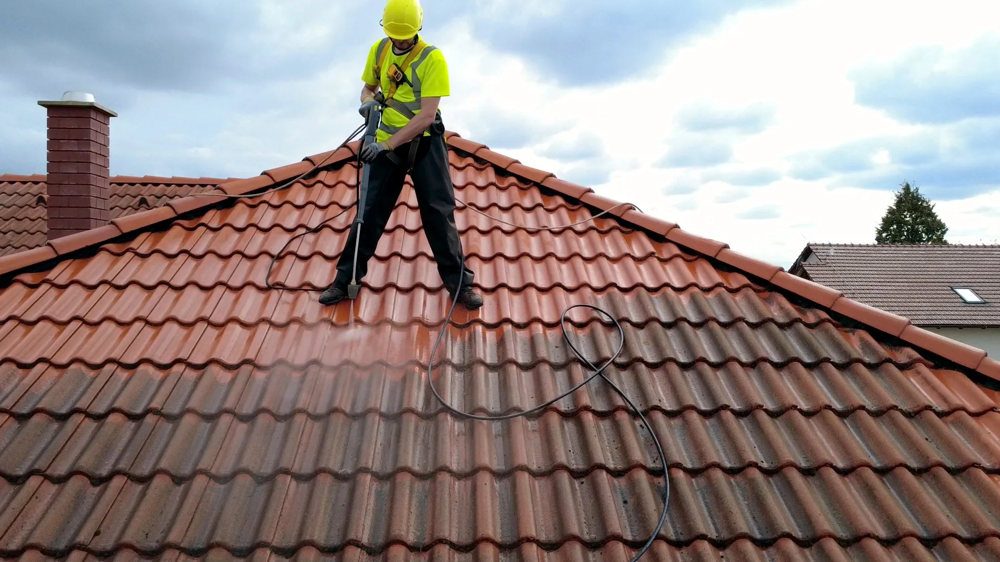

Hlavní služba
Profesionální čištění střech
Odstranění mechu, řas a usazených nečistot. Střechu nejprve ošetříme biocidem, následně vyčistíme vapkou a nakonec aplikujeme impregnaci.
- Betonové a pálené střešní tašky
- Asfaltový šindel
- Kompletní balíček 157 Kč/m²
157 Kč/m²biocid + čištění + impregnace
Více o čištění střech →